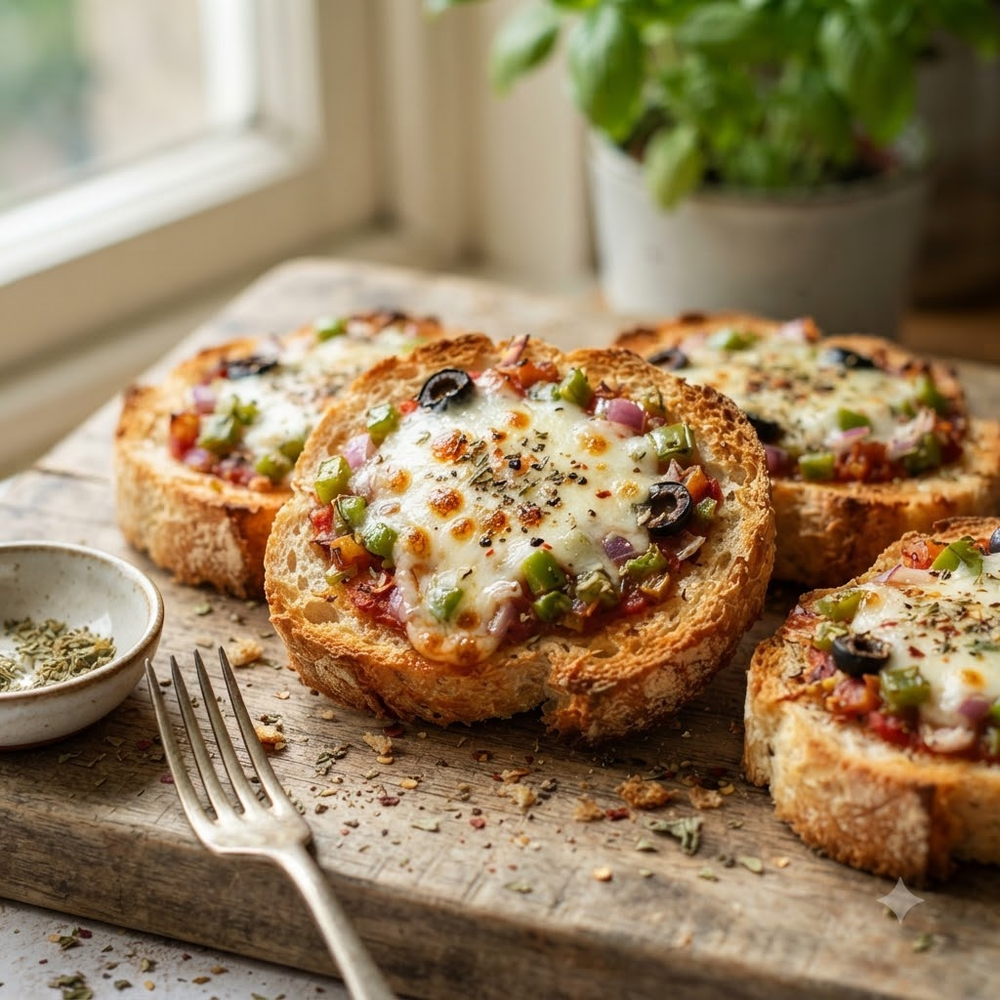

Bread Pizza Bites

Bread Pizza Bites
Airfryer – Bake 180°C 7 min — Serves 4
🔥 Airfryer🍽 Serves 4
Ingredients
- 4 bread slices
- 3 tbsp pizza/tomato sauce
- 1/2 cup grated mozzarella
- Chopped capsicum & onion
- 1/2 tsp oregano
- Oil spray
Method
1Preheat: Preheat the Airfryer to 180°C for 4 minutes before adding the food to the basket.
2Spread sauce on bread slices; top with vegetables and cheese.
3Sprinkle oregano and cut each slice into quarters.
4Arrange in the basket, spray lightly with oil.
5Bake at 180°C for 7 minutes until cheese melts and edges are crisp.